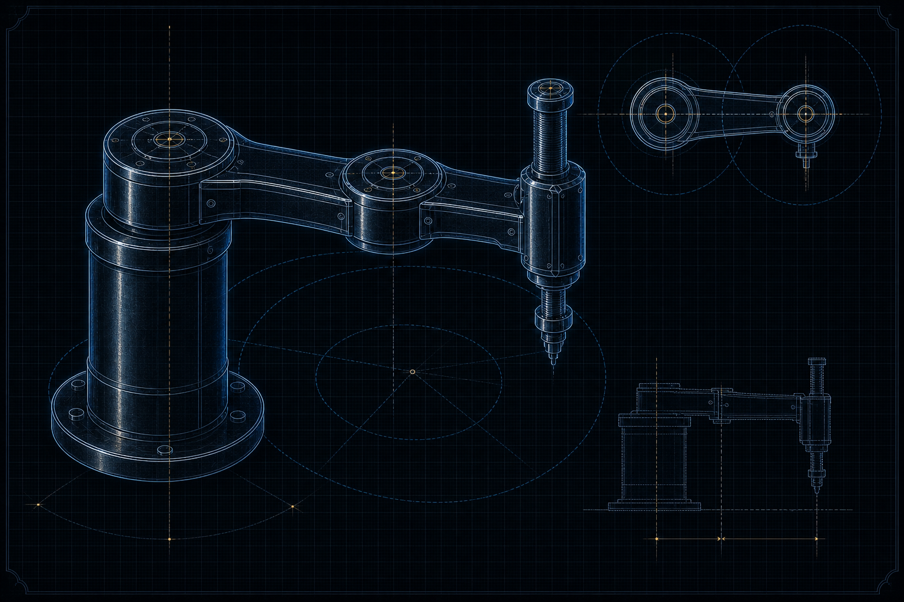
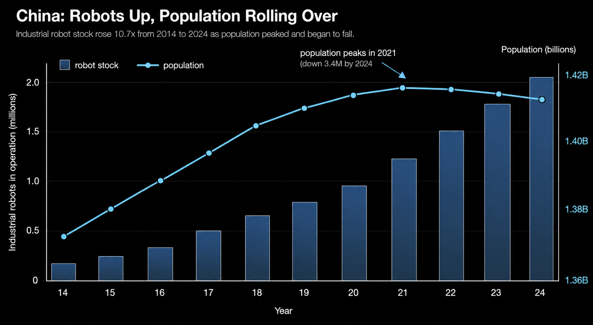
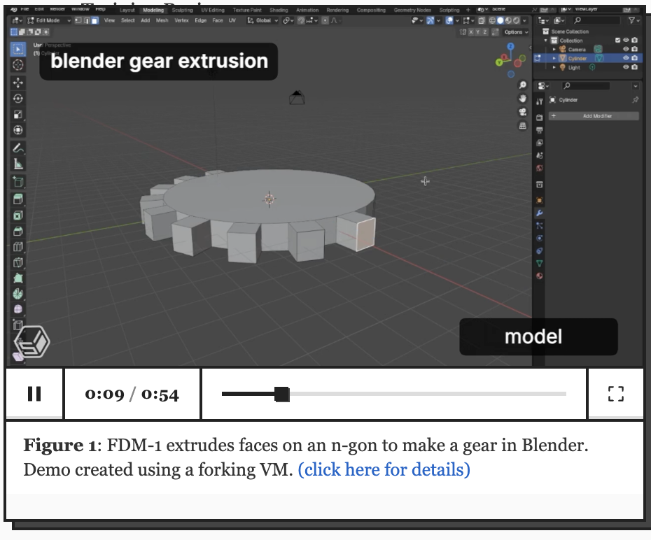

Over the last few years, there has been a steady rise in discourse around recursive self-improvement, with most of it in the realm of bits. The vision is an AI model that forms hypotheses, runs experiments, trains a better model, which trains an even better one, and so on up some dizzying curve. It's a compelling story and I think there is real substance to it. However, it is also a story that assumes the entire loop can be closed inside a datacenter. In my opinion, at some point the loop has to extend into the physical world. AI systems that can help fabricate chips, generate power, mine materials, and build the datacenters they run in can participate in their own improvement much more directly than systems confined to code. The part of recursive self-improvement that runs through atoms rather than bits is wildly underexplored relative to how important it is, and that physical loop is exactly what robotics is starting to close.
I want to be careful with the phrase "recursive self-improvement" because it arrives pre-loaded. In the way it usually gets deployed by the doom-inclined, it conjures a system bootstrapping itself toward something we can't control and probably wouldn't like. I mean something slightly narrower and, I think, more grounded: technology that can increasingly participate in designing and building its own successors, across both planning and execution, without any of the ominous teleology. Not quite an intelligence explosion, but the oldest pattern in the history of technology, running with progressively less human involvement in each iteration.
You can trace this pattern through any technological revolution: machine tools of the industrial revolution were used to manufacture more precise machine tools, which in turn produced still more precise ones. What is new, and separates ordinary tool-bootstrapping from what I'd actually call recursive self-improvement, is the rising order of autonomy in the systems doing the work. The interesting variable is how much planning and judgment the system itself contributes, not merely how much routine execution it automates. As you slide up the autonomy spectrum, the human moves from operating the tool, to supervising it, to specifying a goal and stepping back.
I'll define a robot, for the purposes of this essay, as something that can sense the state of the physical world and take actions in it to achieve a goal. This is not a consensus definition and I don't intend to defend it too hard. What separates one generation of robots from its predecessors, under this framing, is the ability to plan actions at higher levels of abstraction and to achieve more complex goals under more complexity. A robot that needs every motion scripted is a very different object from one you can hand an outcome and trust to figure out the motions, even though both "sense and act."
This is also where the physical and cognitive stories converge. If models can train better models, then robots can have better brains; the cognitive recursion is an input to the physical one. I'm fairly convinced we're heading toward something like a single general architecture underlying most of this (you can disagree about whether transformers already got us there), with variants of the same general intelligence doing wildly different things and steadily getting better at all of them. In the limit, "cognitive recursive self-improvement" and "robotic recursive self-improvement" are the same process viewed from two angles. But the process is the point. We are approaching the beginning of the physical half of it, and it deserves more attention than it gets.
Here is the part I find kind of strange about how the discourse is framed. We talk about AI improving itself as though the whole supply chain it depends on were already abstracted away into an API call. Today's models cannot meaningfully self-improve in the physical world. They can perhaps help design a new chip, but they cannot tape it out and fabricate it end to end, mine and discover new materials, run wet-lab experiments end to end, or stand up new sources of energy. Cognitive AI can help with pieces of this, including optimizing datacenter operations, formulating physics problems, and proposing experiments, but help is not the same as doing. To actually do things in the world, you need a physical form factor that can go out and act.
Embodiment expands the world a system can participate in. A robot can be sent places we can't go, survive temperatures, pressures, and oxygen levels that would kill us, and physically assemble the next version of itself out of hardware. The recursion doesn't have to run through a single bottleneck either; it threads through every stage of a deeply complex supply chain, from raw material extraction, to fabrication, energy generation, and infrastructure construction, at each of which embodiment unlocks a step that pure cognition cannot reach.
The honest difficulty is that none of this is free, and the impact you can generate is bounded by the capability of the current generation of technology. My overall view is that robotics needs to become ubiquitous for the broad impact to materialize, but shifts in techno-economic paradigms take time, and you can't will a paradigm into existence by describing how good it will eventually be. Any autonomous system needs a way to kickstart the flywheel: a use case that generates real economic value with today's hardware, that also acts as a catalyst for the technology's own growth, and that can rapidly evolve to absorb each new capability gain as it lands.
The relationship between the automotive industry and robotics feels, to me, like one useful analog to software engineering's relationship with language models, and for structurally similar reasons. Automotive has been central to industrial robotics from the early days because it is a complex manufacturing process that benefits enormously from automation, and the design and manufacturing principles transfer remarkably well: actuators, batteries, sensors, safety systems, even the "brains" share deep commonalities with autonomous-vehicle stacks. That is why humanoid robotics keeps getting pulled toward automakers, whether as pilots, partners, customers, or owners (see, for example, Figure/BMW, Tesla/Optimus, and Apptronik/Mercedes-Benz). That makes automotive a useful place to start the flywheel story for three broad reasons.
The first reason is the users. Software engineers were already comfortable adopting new software to boost productivity, and more than that, they are a population of people who like building tools to make their own lives easier. Dropping coding models into their workflow met users who were primed to experiment, route around friction, and figure out where the new tool actually helped. Automotive engineers are the equivalent for the physical world: people already fluent in working alongside machines and robots, who don't need to be convinced that automation belongs on the floor.
The second is the testing grounds. Software engineering came with clean, controlled environments like IDEs, CI, and version control, where you could train and evaluate agents against legible signals. Automotive has factory floors: controlled, instrumented, repeatable environments where a robot's performance can actually be measured and improved.
The third, and the one most relevant to recursion, is that the tool can improve the process that makes its own successors. A coding model can help produce the next model by writing experiments, data pipelines, and training code. A robot can do something analogous in the factory: make assembly cheaper, produce parts to tighter tolerances, generate operational data, and improve the manufacturing process for the actuators, sensors, and controllers that future robots depend on. This kind of self-reinforcement is a property you want if you're trying to close a self-improvement loop, and automotive has it natively.
Semiconductors are another clean example, and arguably the original instance of the loop. Computers and semiconductors kickstarted the first real levels of machine autonomy; then robots built using semiconductors were turned around and used to build semiconductors and electronics. The early Japanese SCARA arms going into electronics assembly are a clean example of the recursion biting its own tail. Networking later let these systems talk to each other and coordinate, laying the seeds for genuinely automated factories. Software kept improving through the 21st century, capabilities expanded, and this is still very much in progress.

The key dynamic is that gains from early flywheels do not stay trapped inside the industries that kicked them off. Coding models got pulled forward by software engineering because the users, feedback loops, and adoption incentives were unusually clean, but the improvements that made them better at programming also made them better at reasoning elsewhere. Robotics should rhyme with that. Automotive and semiconductors are just the places where this has started to kick off so far; the same synergies may show up elsewhere in the robot supply chain, from actuators, motors, batteries, sensors, end effectors, and machine tools to materials processing, logistics, and the factories that assemble all of the above. Mining, energy, construction, lab automation, ports, warehouses, and plenty of less obvious domains might contain their own versions of this coupling too. Some will be dead ends, but the important move is to keep looking for places where real deployment makes the next generation cheaper, smarter, or easier to build. If high-precision manufacturing is where robots first get enough deployment, data, and economic pressure to improve quickly, those capabilities can later propagate into domains like home robotics and healthcare, where the adoption incentives are weaker, the environments are messier, and the reliability bar is higher.
The diffusion is still early, but real and measurable. The International Federation of Robotics reported that the global stock of industrial robots hit a record of about 2.7 million units in 2019, an increase of roughly 85% over five years. That number has only accelerated since; by 2024 the operational stock had reached around 4.66 million units. Somewhere in there, the world quietly crossed into the era of "lights-out" factories, facilities that can run without human presence, which have existed in various forms since the early 2000s. And the leading edge keeps creeping toward the recursive case directly: Apptronik's Apollo humanoid, through its partnership with the manufacturing firm Jabil, is being piloted on assembly lines that are intended to eventually include the production of more Apollos. I don't hold strong views on the broader humanoid debate, but a robot helping to build copies of itself is exactly the kind of thing I expect to see more and more of as capabilities advance.
If you want to see where the envelope is being pushed hardest, take a look at China. By 2024 they were installing more industrial robots than the next several largest national markets combined, making them by far the world's largest robot market. This is happening against a backdrop of a declining workforce and looming demographic contraction, which reframes the whole effort: for China this is closer to a survival strategy than an efficiency play, which is exactly why I'd expect it to keep pushing the frontier. There are more humanoid robot companies clustered in Shenzhen than anywhere else on earth, and there's a reason for that concentration. The country that started as a source of cheap, high-volume, disciplined labor has turned into the home of the most sophisticated automated factories in the world, and the ambition is not to build impressive demos, there's active government incentive to push the technology into production. They are, fairly literally, trying to build people to build more things.

Using Carlota Perez's formulation, technological revolutions do not spread smoothly, but through great surges as a new paradigm propagates across the economy. The process starts small, confined to a few sectors and regions, and ends up restructuring production, distribution, communication, and consumption, diffusing outward from a core toward further and further peripheries, gated all the while by the reach of the transport and communications infrastructure underneath it. Robotics, viewed this way, is not a product category. It's a paradigm in the very early stages of diffusion, and that should discipline any claim about where things stand today. The important question is less what robotics has already transformed than where the first self-reinforcing loops are starting to form.
Take the fabs as the concrete case, because they show both the promise and the constraint. Semiconductor fabs are already heavily automated, partly because humans are a contamination risk, and the precision required is brutal: robots handling lightweight, compact materials in a fab need sensors, vision, and drive systems accurate down to the sub-millimeter. But the autonomy of those machines has stayed deliberately low, bounded by the unforgiving failure tolerances of the process. The robots are highly task-specific, and the next frontier is incremental generality: autonomous mobile robots ferrying wafer boxes between machines in legacy fabs where overhead transport can't be installed, autonomous inspection, taking dangerous chemical-handling tasks off human hands. The honest engineering assessment, from people inside these fabs, is that the hard part is dexterity: the fine, dexterous end-effector work, the degrees of freedom in the hand, putting an O-ring into a tool or driving a screw, remains a genuine bottleneck even as dynamic motion has improved. There are, however, promising approaches with the potential to get close to the required performance regime. Physical Intelligence's RLT work, for example, uses online reinforcement learning on top of a VLA model to improve the precise, contact-rich stages of tasks like driving a tiny screw, where final alignment needs sub-millimeter accuracy. The thing gating the flywheel is not whether these skills can be learned at all, but whether they can reach enough reliability for deployment to become a meaningful training regime. As seen in the autonomous vehicle industry, even sparse intervention data can be extremely valuable for pushing reliability further into the nines. Once a system reaches some initial nines of reliability, on-policy experience and DAgger-style correction data become much easier to collect at scale, and every deployed robot can start acting as a data-collection and policy-improvement engine.
I also find the design layer especially interesting here, because it's where the cognitive and physical loops are starting to fuse. A lot of robotic design work happens in CAD and tools like Blender, and the spatiotemporal nature of that work makes it a natural fit for video-native computer-use agents, models that perceive the thing they're manipulating the way a human designer would. This also sits alongside broader robot foundation-model efforts like NVIDIA Isaac, which are trying to make embodied intelligence more reusable across robots, and projects like NVIDIA Research's robot self-improvement work, which explicitly frame robot learning as a loop where agents run physical experiments, inspect failures, and improve policy code against real-world feedback. An agent that can design a better actuator in software, hand it to a robot that can fabricate it more precisely, and feed the result back into the next design pass, is the same loop again, just operating one level up.

None of this requires an intelligence explosion, and that's rather the point. It only requires noticing that one of the oldest patterns in technology, tools making better tools, is acquiring autonomy, that the autonomy is rising fastest exactly where it can already pay for itself, and that the cognitive and physical halves of the loop are starting to feed each other directly.